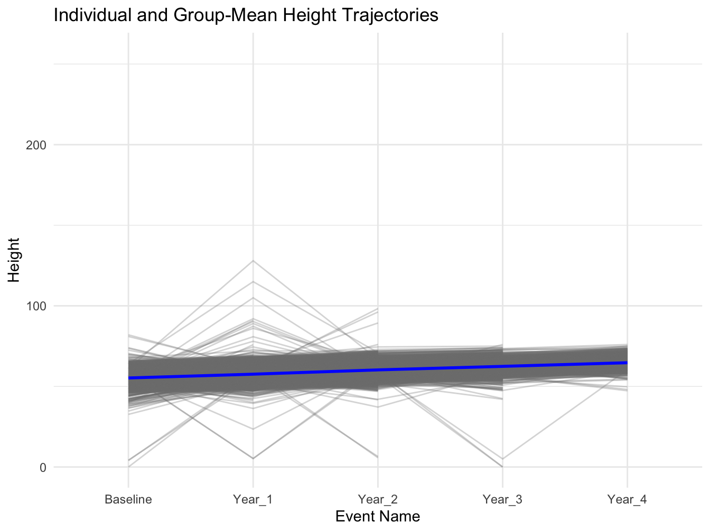

The LMM:ri is similar to traditional (fixed-effect) linear regression extending on this approach by including a subject-specific random-effect that allows each participant to have their own unique intercept value, in addition to the overall mean-level (fixed-effect) intercept value zzzzt
In this example, we will use the LMM:ri to analyze trajectories of height obtained across multiple measurement occasions in a sample of youth taking part in the ABCD Study. Our primary aim is to characterize stability and change in height assessments, while accounting for observations that are clustered within youth over time. To do so, we will use the LMM:ri to simultaneously model an overall sample mean trajectory (fixed effect) and subject-specific (random) effects that vary randomly about the sample mean trajectory.
This code installs the r packages necessary for this example, if they are not already installed
Code
# Create a list of required packagespackages_required <-c("tidyverse","easystats","lme4","gtsummary","report","broom","gridExtra")# Check which packages are not installed and install thempackages_to_install <-setdiff(packages_required, rownames(installed.packages()))if (length(packages_to_install) >0) {install.packages(packages_to_install)}# Load the required packageslapply(packages_required, library, character.only =TRUE)
This code loads the r libraries necessary for this example
Code
library(tidyverse) # Collection of R packages for data sciencelibrary(easystats) # Collection of R packages statistical modeling, visualization, and reportinglibrary(lme4) # Linear mixed-effects modelslibrary(gtsummary) # Publication-ready tableslibrary(report) # Easy reporting of regression analyseslibrary(broom) # Tidy and augment statistical models outputlibrary(gridExtra) # Arrange multiple grid-based plots on a page
This code reads in and shows the data to be used in the current example
Code
# Set the data pathsdata_path_1 <-"/Users/shawes/ABCD/data/rds/abcd_5.0_rds/demo5.0.rds"data_path_2 <-"/Users/shawes/ABCD/data/rds/abcd_5.0_rds/core-rds-5.0/non-imaging_excluding_nt_5.0.rds"# Read the datadata_demographics <-readRDS(data_path_1)data_nonimaging <-readRDS(data_path_2)# Subset the nonimaging data to include desired variablesselected_vars <-c("src_subject_id", "eventname", "nihtbx_totalcomp_fc", "anthroweightcalc", "anthroheightcalc")subset_data <- data_nonimaging[, selected_vars]library(dplyr)# # Merge the datasets on 'src_subject_id' and 'eventname'merged_data <- data_demographics %>%full_join(subset_data, by =c("src_subject_id", "eventname"))# Inspect the merged data structurestr(merged_data)# Define event names to be retained in the analysis and convert variables to appropriate data typeseventnames_to_include <-c("baseline_year_1_arm_1","1_year_follow_up_y_arm_1","2_year_follow_up_y_arm_1","3_year_follow_up_y_arm_1","4_year_follow_up_y_arm_1")df <- merged_data %>%filter(eventname %in% eventnames_to_include) %>%mutate(src_subject_id =as.factor(src_subject_id),eventname =factor(eventname, levels = eventnames_to_include, ordered =TRUE),age =as.numeric(age),sex =as.factor(sex),race.4level =as.factor(race.4level),hisp =as.factor(hisp),high.educ.bl =as.factor(high.educ.bl),household.income.bl =as.factor(household.income.bl),acs_raked_propensity_score =as.numeric(acs_raked_propensity_score),rel_family_id.bl =as.factor(rel_family_id.bl),site_id_l =as.factor(site_id_l),nihtbx_totalcomp_fc =as.numeric(nihtbx_totalcomp_fc),anthroweightcalc =as.numeric(anthroweightcalc),anthroheightcalc =as.numeric(anthroheightcalc) ) %>%# Exclude cases from unused assessment wavesfilter(!is.na(eventname))
The code fits a linear mixed model to predict the ‘Height’ variable based on time points (‘eventname’) and handedness (‘Handedness’), while accounting for individual-level variability by including random intercepts for each participant (‘src_subject_id’). The results of the model are then printed to provide a summary of the fitted model parameters.
STEP 1: Compute LMM Model with Random Intercepts
Code
## Linear Mixed Model with a random intercept (LMM-ri)model <-lmer(anthroweightcalc ~1+ eventname + sex + (1|src_subject_id), data = df, REML=T)
testing
## Output and reports extending from the LMM-ri analyses#summary(model)#confint(model, level = 0.95, method = "Wald")model_performance(model)
testing
model_parameters(model)
testing
model_parameters(model,standardize ="refit")
The code provided executes a linear mixed model (LMM) to predict children’s height across different time points (Baseline, Year_1, Year_2, Year_3, and Year_4), and also takes into account their sex. This model accounts for individual variability in height by including a random intercept for each subject (src_subject_id). The output indicates that the model was fit using the REML (Restricted Maximum Likelihood) criterion.
The following set of plots are used to facilitate model diagnostics. The first is a histogram showcasing the distribution of random intercepts for individual subjects, indicating variations in height not explained by the fixed effects. The second depicts residuals versus fitted values, helping assess the model’s fit and potential heteroscedasticity. The third contrasts observed and predicted height values across different time points, offering a side-by-side evaluation of the model’s predictions against actual observations.
Code
# Extract the random effectsrandom_effects <-ranef(model)[[1]]# Convert to dataframerandom_effects_df <-data.frame(Intercept = random_effects$`(Intercept)`)# Plot 1: Histogramhist_plot <-ggplot(random_effects_df, aes(x = Intercept)) +geom_histogram(aes(y = ..density..), bins =30, color ="black", fill ="lightblue") +labs(title ="Histogram of Random Effects", x ="Random Intercept Values", y ="Density") +theme_minimal()# Plot 2: Residuals vs Fitted Valuesresid_plot <-ggplot(NULL, aes(x = fitted_values, y = residuals)) +geom_point(alpha =0.5) +geom_hline(yintercept =0, linetype ="dashed") +labs(title ="Residuals vs Fitted Values", x ="Fitted Values", y ="Residuals") +theme_minimal()
# Extract the data frame used in the modelmodel_data <- model@frame# Extract unique subject IDs from the model's dataoriginal_subject_ids <-unique(model_data$src_subject_id)# Subset the original data to include only those subjectsdf_subset <- df %>%filter(src_subject_id %in% original_subject_ids)eventname_map <-c("baseline_year_1_arm_1"="Baseline","1_year_follow_up_y_arm_1"="Year_1","2_year_follow_up_y_arm_1"="Year_2","3_year_follow_up_y_arm_1"="Year_3","4_year_follow_up_y_arm_1"="Year_4")# Apply the recoding to the eventname variabledf_subset$eventname <-factor(df_subset$eventname, levels =names(eventname_map), labels = eventname_map)# Verify the recodingtable(df_subset$eventname)
# Generate the plotggplot(df_subset, aes(x = eventname, y = anthroheightcalc, group = src_subject_id)) +# Individual estimated height trajectories in faded linesgeom_line(aes(group = src_subject_id), alpha =0.3, color ="grey50") +# Overall group-mean trajectory in blue with increased thicknessstat_summary(aes(group =1), fun = mean, geom ="line", color ="blue", linewidth =1) +labs(title ="Individual and Group-Mean Height Trajectories",x ="Event Name",y ="Height") +theme_minimal()

Code
report(model)
We fitted a linear mixed model (estimated using REML and nloptwrap optimizer) to predict anthroweightcalc with eventname and sex (formula: anthroweightcalc ~ 1 + eventname + sex). The model included src_subject_id as
random effect (formula: ~1 | src_subject_id). The model's total explanatory power is substantial (conditional R2 = 0.39) and the part related to the fixed effects alone (marginal R2) is of 0.12. The model's intercept,
corresponding to eventname = and sex = Female, is at 110.77 (95% CI [109.81, 111.72], t(37534) = 227.91, p < .001). Within this model:
- The effect of eventname [linear] is statistically significant and positive (beta = 45.14, 95% CI [43.97, 46.30], t(37534) = 76.01, p < .001; Std. beta = 0.90, 95% CI [0.88, 0.93])
- The effect of eventname [quadratic] is statistically significant and positive (beta = 2.63, 95% CI [1.57, 3.68], t(37534) = 4.87, p < .001; Std. beta = 0.05, 95% CI [0.03, 0.07])
- The effect of eventname [cubic] is statistically non-significant and positive (beta = 0.22, 95% CI [-1.10, 1.53], t(37534) = 0.32, p = 0.748; Std. beta = 4.32e-03, 95% CI [-0.02, 0.03])
- The effect of eventname [4th degree] is statistically non-significant and positive (beta = 0.92, 95% CI [-0.18, 2.03], t(37534) = 1.64, p = 0.102; Std. beta = 0.02, 95% CI [-3.66e-03, 0.04])
- The effect of sex [Male or other] is statistically significant and negative (beta = -2.14, 95% CI [-3.37, -0.91], t(37534) = -3.42, p < .001; Std. beta = -0.04, 95% CI [-0.07, -0.02])
Standardized parameters were obtained by fitting the model on a standardized version of the dataset. 95% Confidence Intervals (CIs) and p-values were computed using a Wald t-distribution approximation.
The estimate of the random intercept was 110.767 (SE 0.486). The fixed effects section provides the coefficients for the intercept, eventname, and the sex variable.
The linear mixed model analysis was conducted to predict children’s height across different time points (Baseline, Year_1, Year_2, Year_3, and Year_4) using the event name (eventname) and height (Height) variables. The intercept, corresponding to the reference levels of the predictors is estimated at 110.767 units, and this effect is highly significant. Regarding sex, boys show an increase in height of about -2.139 (SE 0.486) units compared to girls.
Code
report_performance(model)
The model's total explanatory power is substantial (conditional R2 = 0.39) and the part related to the fixed effects alone (marginal R2) is of 0.12
Source Code
---title: "Linear Mixed Models: Random Intercept"author: "Biostatistics Working Group"execute: freeze: auto # re-render only when source changes cache: true---## Overview<p>The LMM:ri is similar to traditional (fixed-effect) linear regression extending on this approach by including a subject-specific random-effect that allows each participant to have their own unique intercept value, in addition to the overall mean-level (fixed-effect) intercept value zzzztIn this example, we will use the LMM:ri to analyze trajectories of height obtained across multiple measurement occasions in a sample of youth taking part in the ABCD Study. Our primary aim is to characterize stability and change in height assessments, while accounting for observations that are clustered within youth over time. To do so, we will use the LMM:ri to simultaneously model an overall sample mean trajectory (fixed effect) and subject-specific (random) effects that vary randomly about the sample mean trajectory.</p>## Preliminary Setup::: panel-tabset### Install Packages {.tabset .tabset-fade .tabset-pills}::: blue> **This code installs the r packages necessary for this example, if> they are not already installed**```{r pckg-install}#| echo: TRUE#| messages: FALSE#| warning: FALSE#| output: FALSE# Create a list of required packagespackages_required <- c("tidyverse","easystats","lme4","gtsummary","report","broom","gridExtra")# Check which packages are not installed and install thempackages_to_install <- setdiff(packages_required, rownames(installed.packages()))if (length(packages_to_install) > 0) { install.packages(packages_to_install)}# Load the required packageslapply(packages_required, library, character.only = TRUE)```:::### Load Packages::: blue**This code loads the r libraries necessary for this example**```{r lib-load}#| echo: TRUE#| messages: FALSE#| warning: FALSE#| output: FALSElibrary(tidyverse) # Collection of R packages for data sciencelibrary(easystats) # Collection of R packages statistical modeling, visualization, and reportinglibrary(lme4) # Linear mixed-effects modelslibrary(gtsummary) # Publication-ready tableslibrary(report) # Easy reporting of regression analyseslibrary(broom) # Tidy and augment statistical models outputlibrary(gridExtra) # Arrange multiple grid-based plots on a page```:::### Config Options::: blue**This code configures knitr code chunk options**```{r config}#| echo: TRUE#| messages: FALSE#| warning: FALSE#| output: FALSEknitr::opts_chunk$set(echo = T, message=F, warning=F, error=F, comment=NA, cache=T, code_folding=T, R.options=list(width=220, digits = 3), fig.align='center', out.width='75%', fig.asp=.75)```::::::## Descriptives Overview::: panel-tabset### Read and View Data {.tabset .tabset-fade .tabset-pills}::: blue**This code reads in and shows the data to be used in the currentexample**```{r read-data}#| echo: TRUE#| messages: FALSE#| warning: FALSE#| output: FALSE#| cache: FALSE# Set the data pathsdata_path_1 <- "/Users/shawes/ABCD/data/rds/abcd_5.0_rds/demo5.0.rds"data_path_2 <- "/Users/shawes/ABCD/data/rds/abcd_5.0_rds/core-rds-5.0/non-imaging_excluding_nt_5.0.rds"# Read the datadata_demographics <- readRDS(data_path_1)data_nonimaging <- readRDS(data_path_2)# Subset the nonimaging data to include desired variablesselected_vars <- c("src_subject_id", "eventname", "nihtbx_totalcomp_fc", "anthroweightcalc", "anthroheightcalc")subset_data <- data_nonimaging[, selected_vars]library(dplyr)# # Merge the datasets on 'src_subject_id' and 'eventname'merged_data <- data_demographics %>% full_join(subset_data, by = c("src_subject_id", "eventname"))# Inspect the merged data structurestr(merged_data)# Define event names to be retained in the analysis and convert variables to appropriate data typeseventnames_to_include <- c("baseline_year_1_arm_1", "1_year_follow_up_y_arm_1", "2_year_follow_up_y_arm_1", "3_year_follow_up_y_arm_1", "4_year_follow_up_y_arm_1")df <- merged_data %>% filter(eventname %in% eventnames_to_include) %>% mutate( src_subject_id = as.factor(src_subject_id), eventname = factor(eventname, levels = eventnames_to_include, ordered = TRUE), age = as.numeric(age), sex = as.factor(sex), race.4level = as.factor(race.4level), hisp = as.factor(hisp), high.educ.bl = as.factor(high.educ.bl), household.income.bl = as.factor(household.income.bl), acs_raked_propensity_score = as.numeric(acs_raked_propensity_score), rel_family_id.bl = as.factor(rel_family_id.bl), site_id_l = as.factor(site_id_l), nihtbx_totalcomp_fc = as.numeric(nihtbx_totalcomp_fc), anthroweightcalc = as.numeric(anthroweightcalc), anthroheightcalc = as.numeric(anthroheightcalc) ) %>% # Exclude cases from unused assessment waves filter(!is.na(eventname))```:::### Descriptives::: blue**This code creates a descriptives table**```{r descriptives}#| echo: TRUE#| messages: FALSE#| warning: FALSEdescriptives_table <- df %>% select(eventname, sex, race.4level, hisp, anthroweightcalc) %>% mutate(eventname = factor(eventname, labels = c("Baseline", "Year 1","Year 2","Year 3","Year 4"))) %>% mutate(sex = factor(sex, labels = c("Female", "Male"))) %>% tbl_summary( by = eventname, missing = "no", label = list(sex ~ "Sex", race.4level ~ "Race", hisp ~ "Hispanic", anthroweightcalc ~ "Weight"), statistic = list(all_continuous() ~ "{mean} ({sd}) )", all_categorical() ~ "{p}%"), ) %>%modify_header(all_stat_cols() ~ "**{level}**<br>N = {n}") %>% bold_labels() %>% italicize_levels() %>% modify_spanning_header(all_stat_cols() ~ "**Assessment Wave**")theme_gtsummary_compact()descriptives_table```::::::## Results::: panel-tabset### Build Model {.tabset .tabset-fade .tabset-pills}::: blueThe code fits a linear mixed model to predict the 'Height' variable based on time points ('eventname') and handedness ('Handedness'), while accounting for individual-level variability by including random intercepts for each participant ('src_subject_id'). The results of the model are then printed to provide a summary of the fitted model parameters.**STEP 1: Compute LMM Model with Random Intercepts**```{r build-model-1}#| class.source: 'fold-hide'#| message: FALSE#| warning: FALSE#| echo: TRUE#| cache: true## Linear Mixed Model with a random intercept (LMM-ri)model <- lmer(anthroweightcalc ~ 1 + eventname + sex + (1|src_subject_id), data = df, REML=T)``````{r model-output}#| echo: TRUE#| messages: FALSE#| warning: FALSE#| code-summary: testing## Output and reports extending from the LMM-ri analyses#summary(model)#confint(model, level = 0.95, method = "Wald")model_performance(model)model_parameters(model)model_parameters(model,standardize = "refit")```The code provided executes a linear mixed model (LMM) to predict children's height across different time points (Baseline, Year_1, Year_2, Year_3, and Year_4), and also takes into account their sex. This model accounts for individual variability in height by including a random intercept for each subject (src_subject_id). The output indicates that the model was fit using the REML (Restricted Maximum Likelihood) criterion. :::### Model Plots::: blueThe following set of plots are used to facilitate model diagnostics. The first is a histogram showcasing the distribution of random intercepts for individual subjects, indicating variations in height not explained by the fixed effects. The second depicts residuals versus fitted values, helping assess the model's fit and potential heteroscedasticity. The third contrasts observed and predicted height values across different time points, offering a side-by-side evaluation of the model's predictions against actual observations.```{r diagnosticplots}# Extract the random effectsrandom_effects <- ranef(model)[[1]]# Convert to dataframerandom_effects_df <- data.frame(Intercept = random_effects$`(Intercept)`)# Plot 1: Histogramhist_plot <- ggplot(random_effects_df, aes(x = Intercept)) + geom_histogram(aes(y = ..density..), bins = 30, color = "black", fill = "lightblue") + labs(title = "Histogram of Random Effects", x = "Random Intercept Values", y = "Density") + theme_minimal()# Plot 2: Residuals vs Fitted Valuesresid_plot <- ggplot(NULL, aes(x = fitted_values, y = residuals)) + geom_point(alpha = 0.5) + geom_hline(yintercept = 0, linetype = "dashed") + labs(title = "Residuals vs Fitted Values", x = "Fitted Values", y = "Residuals") + theme_minimal()``````{r}library(ggplot2)theme_set(theme_modern(base_size =6))plot(parameters(model)) + ggplot2::labs(title ="A Dot-and-Whisker Plot")#plot(model)result <-estimate_expectation(model, data ="grid")plot(result)#plot(result, type = "qq")#plot(result, type = "pp")normality <-check_normality(model, effects ="random")#plot(normality)heteroscedasticity <-check_heteroscedasticity(model)#plot(heteroscedasticity)homogeneity <-check_homogeneity(model)#plot(homogeneity, type = "density")distribution <-check_distribution(model)#plot(distribution)#contrasts <- estimate_contrasts(model, contrast = "sex")#means <- estimate_means(model)#plot(means)#plot(contrasts, means)params <-model_parameters(model, effects ="fixed")#plot(params, show_labels = TRUE, size_text = 4)#check_model(model)```:::```{r trajectoryplot}# Extract the data frame used in the modelmodel_data <- model@frame# Extract unique subject IDs from the model's dataoriginal_subject_ids <- unique(model_data$src_subject_id)# Subset the original data to include only those subjectsdf_subset <- df %>% filter(src_subject_id %in% original_subject_ids)eventname_map <- c( "baseline_year_1_arm_1" = "Baseline", "1_year_follow_up_y_arm_1" = "Year_1", "2_year_follow_up_y_arm_1" = "Year_2", "3_year_follow_up_y_arm_1" = "Year_3", "4_year_follow_up_y_arm_1" = "Year_4")# Apply the recoding to the eventname variabledf_subset$eventname <- factor(df_subset$eventname, levels = names(eventname_map), labels = eventname_map)# Verify the recodingtable(df_subset$eventname)# Generate the plotggplot(df_subset, aes(x = eventname, y = anthroheightcalc, group = src_subject_id)) + # Individual estimated height trajectories in faded lines geom_line(aes(group = src_subject_id), alpha = 0.3, color = "grey50") + # Overall group-mean trajectory in blue with increased thickness stat_summary(aes(group = 1), fun = mean, geom = "line", color = "blue", linewidth = 1) + labs(title = "Individual and Group-Mean Height Trajectories", x = "Event Name", y = "Height") + theme_minimal()``````{r}#| echo: false## Creating variable (names) from output to be used for inline textlibrary(broom.mixed)library(easystats)tidyfit <-tidy(model)tidyaugment <-augment(model)tidyglance <-glance(model)Intercept_estimate <-round(tidyfit[tidyfit$term =="(Intercept)", "estimate"], 3)Intercept_SE <-round(tidyfit[tidyfit$term =="(Intercept)", "std.error"], 3)sex_effect <-round(tidyfit[tidyfit$term =="sexMale or other", "estimate"], 3)# Extract values from the tibble for inline textIntercept_estimate <- Intercept_estimate$estimateIntercept_SE <- Intercept_SE$std.errorsex_effect <-sex_effect$estimate##############r eventname_estimate#r sex_effect#r conditional_R2#r conditional_R2*100**%#r marginal_R2``````{r}report(model)```:::## Wrapping Up<div class = "blue">::: panel-tabset### Write-up {.tabset .tabset-fade .tabset-pills}::: blueThe estimate of the random intercept was `r Intercept_estimate` (*SE* `r Intercept_SE`). The fixed effects section provides the coefficients for the intercept, eventname, and the sex variable.The linear mixed model analysis was conducted to predict children's height across different time points (Baseline, Year_1, Year_2, Year_3, and Year_4) using the event name (eventname) and height (Height) variables. The intercept, corresponding to the reference levels of the predictors is estimated at `r Intercept_estimate` units, and this effect is highly significant. Regarding sex, boys show an increase in height of about `r sex_effect` (*SE* `r Intercept_SE`) units compared to girls.```{r}report_performance(model)```::::::